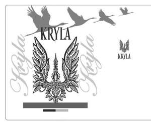

Trade Mark Journal No.2025/025 20 June 2025
UK00004214297 5 June 2025 (33)

- Class 33
- Alcoholic beverages; vodka; brandy; fruit-based liqueurs; herbal liqueurs; flavored alcoholic beverages; spirits and distilled beverages; alcoholic essences and extracts used in the preparation of beverages; Grain-based distilled alcoholic beverages; Pre-mixed alcoholic beverages, other than beer-based; Flavored brewed alcoholic malt beverages, except beers; Flavoured brewed alcoholic malt beverages, except beers; Pre-mixed alcoholic beverages; Sugarcane-based alcoholic beverages; Alcoholic beverages containing fruit; Fruit (Alcoholic beverages containing -); Alcoholic beverages of fruit; Alcoholic fruit beverages; Cordials [alcoholic beverages]; Alcoholic tea-based beverage; Alcoholic carbonated beverages, except beer; Alcoholic coffee-based beverage; Alcoholic beverages [except beers]; Alcoholic beverages except beers; Alcoholic beverages (except beers); Alcoholic beverages, except beer; Alcoholic beverages (except beer); Beverages (Alcoholic -), except beer; Flavored tonic liquors; Aperitifs with a distilled alcoholic liquor base; Wine-based beverages; Alcoholic fruit extracts; Fruit extracts, alcoholic; Alcoholic seltzers; Distilled beverages; Beverages (Distilled -); Alcoholic cocktails containing milk; Alcoholic fruit cocktail drinks; Extracts of spiritous liquors; Baijiu [Chinese distilled alcoholic beverage]; Alcoholic extracts; Alcoholic cocktails in the form of chilled gelatins; Rum [alcoholic beverage]; Alcoholic essences; Alcoholic cocktail mixes; Alcoholic cocktails; Nira [sugarcane-based alcoholic beverage]; Coffee-based liqueurs; Wine-based drinks; Rum-based beverages; Tonic liquor flavored with japanese plum extracts (umeshu); Alcoholic cordials; Tonic liquor containing herb extracts (homeishu); Tonic liquor flavored with pine needle extracts (matsuba-zake); Alcoholic bitters; Prepared alcoholic cocktails; Spirits [beverages]; Beverages containing wine [spritzers]; Preparations for making alcoholic beverages; Alcoholic preparations for making beverages; Alcoholic aperitifs; Alcoholic punches; Low alcoholic drinks; Alcoholic jellies; Alcoholic aperitif bitters; Alcoholic energy drinks; Alcoholic egg nog; Rice alcohol; Alcohol (Rice -).
Arsenii Shyrshykov
Representative: Oksana Karpovych